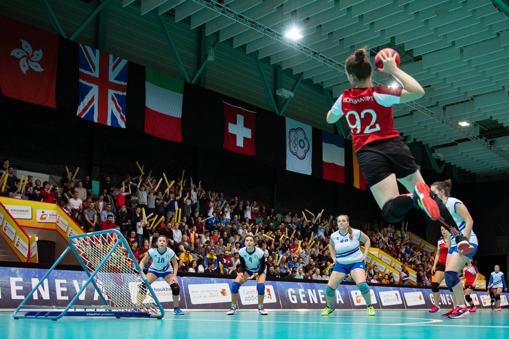
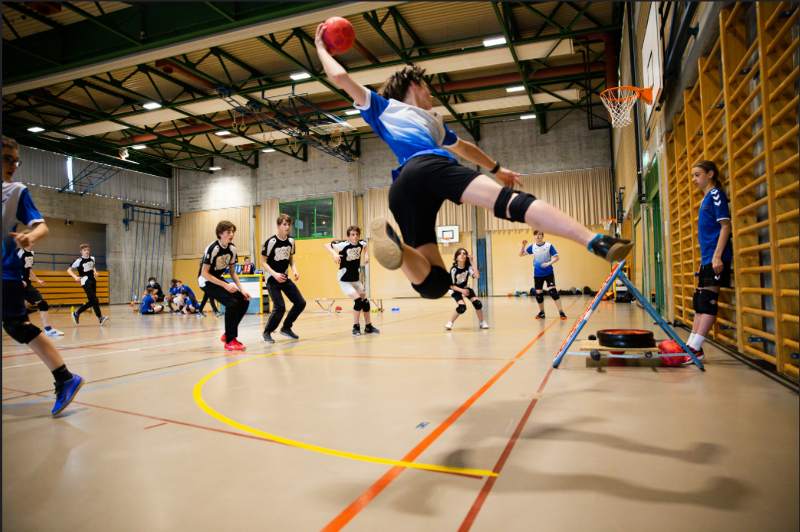
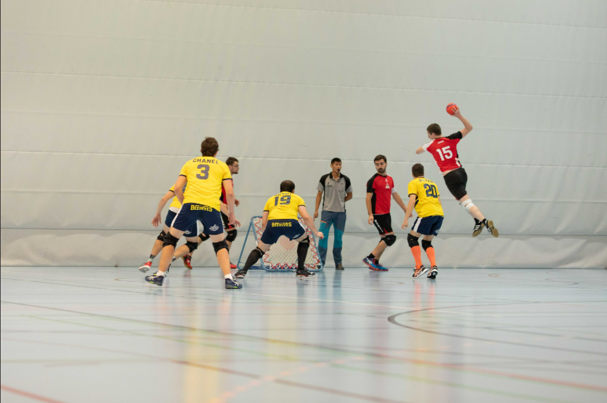

Bienvenue sur Tchoukball !
Vous trouverez tout ce que vous devrez savoir sur ce sport, sur les différentes pages de ce site.



Le tchoukball est un sport de balle d’origine suisse, inventé à Genève dans les années 1960. Il est maintenant présent dans plus de 40 pays à haut niveau.
“
Un sport où les contacts sont bannis, où l’esprit d’équipe est mis en avant, et le fair-play primé
”